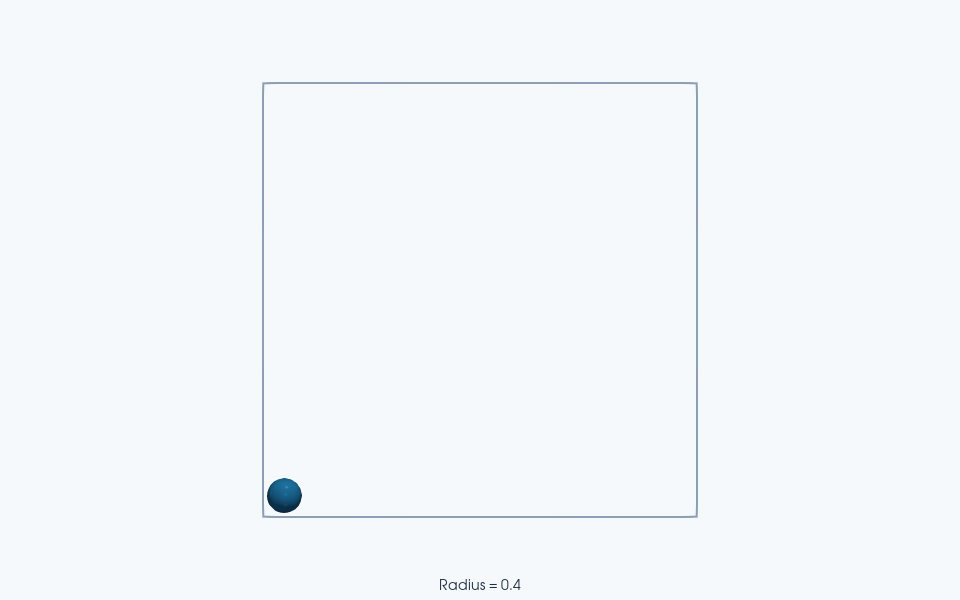

Note
Go to the end to download the full example code.
The Simulation Domain#
Domain defines the spatial boundaries of a
simulation:
Displacement — how relative vectors between particles are computed (minimum-image wrapping for periodic domains).
Boundary enforcement — how particles interact with walls or box edges.
JaxDEM provides five built-in domains:
"free"(FreeDomain) — unbounded space."periodic"(PeriodicDomain) — periodic minimum-image box."leesedwards"(LeesEdwardsDomain) — shear-periodic boundaries."reflect"(ReflectDomain) — impulse-based reflective walls (spheres and clumps)."reflectsphere"(ReflectSphereDomain) — lightweight reflective walls for sphere-only systems.
Domain Creation and Common Attributes#
Configure a domain through create() (or build
one with Domain.create). Every
domain stores box_size (default ones)
and anchor (default zeros), defining
the box \([\text{anchor},\;\text{anchor} + \text{box\_size}]\):
from dataclasses import replace
import jax.numpy as jnp
import jaxdem as jdem
state = jdem.State.create(pos=jnp.zeros((1, 2)))
system = jdem.System.create(
state.shape,
domain_type="periodic",
domain_kw={"box_size": 10.0 * jnp.ones(2), "anchor": jnp.zeros(2)},
)
print("Domain:", type(system.domain).__name__, "| box_size:", system.domain.box_size)
Domain: PeriodicDomain | box_size: [10. 10.]
Free Domain#
FreeDomain imposes no walls. Each step it
updates box_size and anchor to tightly bound all particles (used by
cell-list spatial hashing):
state = jdem.State.create(
pos=jnp.array([[0.0, 0.0], [3.0, 4.0]]),
rad=jnp.array([0.5, 0.5]),
)
system = jdem.System.create(state.shape, domain_type="free")
state, system = jdem.System.initialize(state, system)
state, system = jdem.System.step(state, system)
print("Free box_size:", system.domain.box_size, "| anchor:", system.domain.anchor)
Free box_size: [4. 5.] | anchor: [-0.5 -0.5]
Periodic Domain#
PeriodicDomain uses minimum-image
displacements (displacement()).
Coordinates stay unwrapped during stepping; call
shift() whenever you want
particles wrapped back into the primary box (e.g. before visualization).
For continuous box compression or expansion with velocity-dependent laws,
PeriodicDomain also accepts a box_rate vector.
state = jdem.State.create(pos=jnp.array([[0.1, 0.1], [9.9, 10.2]]))
system = jdem.System.create(
state.shape,
domain_type="periodic",
domain_kw={"box_size": 10.0 * jnp.ones(2), "anchor": jnp.zeros(2)},
)
rij = system.domain.displacement(state.pos[0], state.pos[1], system)
print("Naive:", state.pos[0] - state.pos[1], "| minimum-image:", rij)
state, system = system.domain.shift(state, system)
print("Wrapped positions:\n", state.pos)
Naive: [ -9.8 -10.1] | minimum-image: [ 0.2 -0.1]
Wrapped positions:
[[0.1 0.1]
[9.9 0.2]]
Resizing Any Domain#
Every domain supports resize(), which scales
particle positions affinely with the new box dimensions and updates pair
histories cleanly (this is what
scale_to_packing_fraction() uses):
state, system = system.domain.resize(state, system, jnp.array([8.0, 8.0]))
print("Resized box_size:", system.domain.box_size)
print("Affinely scaled positions:\n", state.pos)
Resized box_size: [8. 8.]
Affinely scaled positions:
[[0.08 0.08]
[7.92 0.16]]
Lees–Edwards Shear-Periodic Domain#
LeesEdwardsDomain adds a shear
offset gamma * box_size[beta] along the flow axis
alpha (default 0)
whenever a periodic image crosses the gradient axis
beta (default 1).
Discrete affine shear (quasistatic protocols): call
shear() to apply a
strain increment dgamma directly (updating gamma, affine positions,
and contact histories without advancing time):
system = jdem.System.create(
state.shape,
domain_type="leesedwards",
domain_kw={"box_size": 10.0 * jnp.ones(2), "gamma": 0.5, "alpha": 0, "beta": 1},
)
rij = system.domain.displacement(jnp.array([1.0, 0.1]), jnp.array([6.0, 9.9]), system)
print("Lees-Edwards displacement (gamma=0.5):", rij)
state, system = system.domain.shear(state, system, dgamma=0.05)
print("Strain after discrete shear:", float(system.domain.gamma))
Lees-Edwards displacement (gamma=0.5): [0. 0.2]
Strain after discrete shear: 0.55
Continuous dynamic shear: set gamma_dot and advance gamma in
user_pre_step_actions so forces and
velocity-dependent laws (like Cundall–Strack) see the updated strain and
image velocity at every step:
def advance_shear(st: jdem.State, sys: jdem.System) -> tuple[jdem.State, jdem.System]:
dom = replace(sys.domain, gamma=sys.domain.gamma + sys.domain.gamma_dot * sys.dt)
return st, replace(sys, domain=dom)
system_shear = jdem.System.create(
state.shape,
dt=0.01,
domain_type="leesedwards",
domain_kw={"box_size": 10.0 * jnp.ones(2), "gamma_dot": 0.2},
user_pre_step_actions=advance_shear,
)
state_sh, system_shear = jdem.System.initialize(state, system_shear)
state_sh, system_shear = jdem.System.step(state_sh, system_shear, n=5)
print("Strain after 5 dynamic steps:", float(system_shear.domain.gamma))
Strain after 5 dynamic steps: 0.01
Reflective Domains#
ReflectDomain resolves wall impacts with
impulse-based mechanics for both spheres and rigid clumps.
ReflectSphereDomain
("reflectsphere") is a faster sphere-only specialization. Both accept
restitution_coefficient
(default 1.0, perfectly elastic):
state_r = jdem.State.create(
pos=jnp.array([[0.5, 0.5]]),
vel=jnp.array([[-1.0, 0.0]]),
rad=jnp.array([0.4]),
)
system_r = jdem.System.create(
state_r.shape,
domain_type="reflect",
dt=0.01,
domain_kw={"box_size": 10.0 * jnp.ones(2), "restitution_coefficient": 0.8},
)
state_r, system_r = jdem.System.initialize(state_r, system_r)
state_r, system_r = jdem.System.step(state_r, system_r, n=20)
print("Reflect (e=0.8) vel after bounce:", state_r.vel)
# Sphere-only reflective domain:
state = jdem.State.create(
pos=jnp.array([[0.5, 0.5]]),
vel=jnp.array([[-1.0, 0.0]]),
rad=jnp.array([0.4]),
)
system = jdem.System.create(
state.shape,
domain_type="reflectsphere",
dt=0.01,
domain_kw={"box_size": 10.0 * jnp.ones(2)},
)
state, system = jdem.System.initialize(state, system)
state, system = jdem.System.step(state, system, n=20)
print("ReflectSphere (e=1.0) pos:", state.pos, "| vel:", state.vel)

ParaView rendering of this run’s VTKWriter output.
Reflect (e=0.8) vel after bounce: [[0.8 0. ]]
ReflectSphere (e=1.0) pos: [[0.5 0.5]] | vel: [[1. 0.]]
apply() vs shift()#
apply()— called automatically each step by the integrator (enforces wall bounces on reflective domains; no-op on periodic domains).shift()— called explicitly by you when you want coordinates mapped back into the primary periodic box (no-op on free and reflective domains).
Total running time of the script: (0 minutes 6.248 seconds)